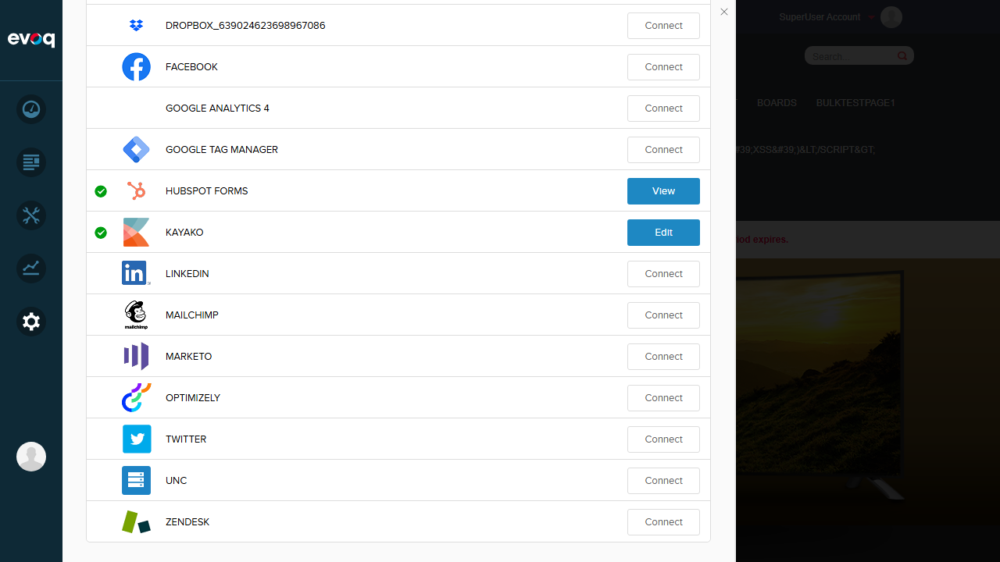
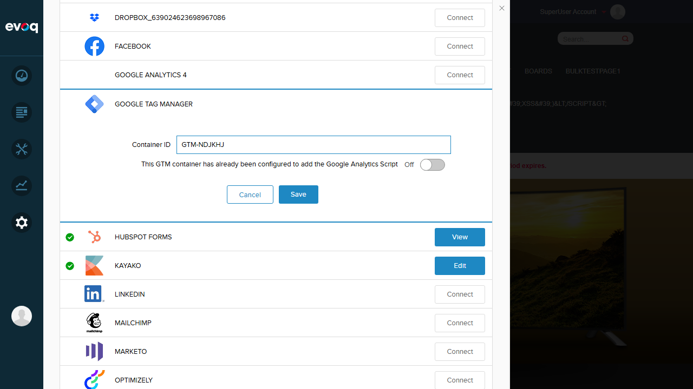
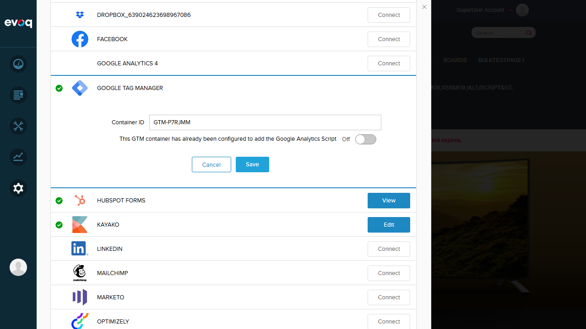
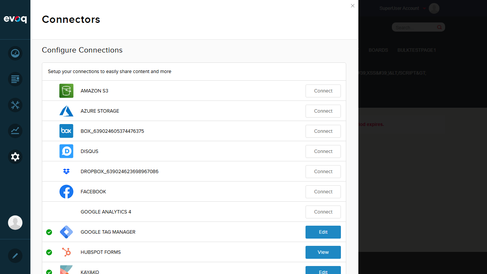
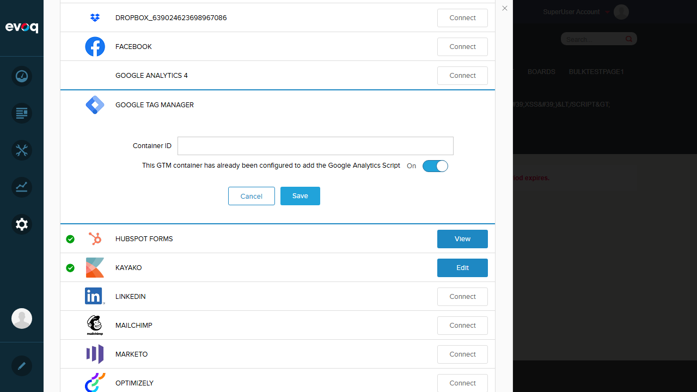
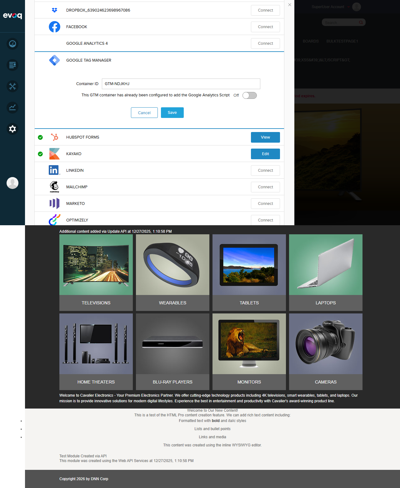

GTM Script Injection - Test Report
Feature Information
Feature Name: GTM Script Injection
Extension: Evoq.GoogleTagManagerConnector
Description: Injects Google Tag Manager JavaScript code into page headers for tracking and analytics
UI Location: Settings > Connectors > Google Tag Manager
Feature Priority: Top
Test Date: January 6, 2026
Test Summary
| Test Scenario |
Status |
| No script injection when container ID is empty |
PASS |
| GTM script appears when container is configured |
PASS |
| Container ID correctly substituted in script |
PASS |
| Script injects on CDefault pages (public and admin) |
PASS |
| Script injection reflects configuration changes |
PASS |
| Invalid container ID validation |
PASS |
Detailed Test Results
Test 1: No Script Injection When Container ID is Empty
Status: PASS
Steps:
- Navigate to Settings > Connectors
- Verify Google Tag Manager has no container ID configured
- Navigate to public site page
- Check page source for GTM script
Expected Result: No GTM script should be present in page head when container ID is empty
Actual Result: GTM script was NOT found in page source (hasGTM: false)
JavaScript Check Result:
{
"hasGTM": false,
"headSnippet": "...standard DNN CSS/JS files, no GTM script..."
}
Screenshot:

Test 2: GTM Script Appears When Container is Configured
Status: PASS
Steps:
- Navigate to Settings > Connectors
- Click "Connect" on Google Tag Manager
- Enter valid container ID: GTM-P7RJMM
- Click Save
- Navigate to public site page
- Check page source for GTM script
Expected Result: GTM script should be present in page head with configured container ID
Actual Result: GTM script was found with correct container ID (hasGTM: true)
JavaScript Check Result:
{
"hasGTM": true,
"containerId": "GTM-P7RJMM",
"scriptSnippet": "<script async=\"\" src=\"https://www.googletagmanager.com/gtm.js?id=GTM-P7RJMM\"></script>"
}
Screenshots:



Test 3: Container ID Correctly Substituted in Script
Status: PASS
Steps:
- Configure GTM with container ID: GTM-P7RJMM
- Navigate to public page
- Verify the exact container ID appears in the injected script URL
Expected Result: The [CONTAINERID] placeholder should be replaced with actual container ID
Actual Result: Script contains correct URL: https://www.googletagmanager.com/gtm.js?id=GTM-P7RJMM
Code Analysis: The script template in GoogleTagManager.config uses [CONTAINERID] placeholder which is replaced in TagManagerModule.cs line 80:
scriptContent = scriptContent?.Replace("[CONTAINERID]", containerId);
Test 4: Script Injects on CDefault Pages
Status: PASS
Steps:
- Configure GTM with valid container ID
- Navigate to public home page - verify GTM present
- Navigate to Host admin page - verify GTM present
Expected Result: GTM script should inject on all CDefault pages (both public and admin pages in DNN)
Actual Result: GTM script was found on both public page and Host admin page
Public Page (http://localhost:8081/en-us/):
{ "hasGTM": true, "containerId": "GTM-P7RJMM" }
Host Admin Page (http://localhost:8081/Host/Host-Settings):
{ "hasGTM": true, "containerId": "GTM-P7RJMM" }
Code Reference: TagManagerModule.cs line 46:
if (!(page is CDefault)) return;
Screenshot:

Test 5: Script Injection Reflects Configuration Changes
Status: PASS
Steps:
- Clear the container ID (set to empty)
- Save configuration
- Navigate to public page
- Verify GTM script is no longer present
- Re-configure with valid container ID
- Verify GTM script is injected again
Expected Result: Configuration changes should be reflected immediately on page refresh
Actual Result: After clearing container ID, GTM script was removed. After re-configuring, script was injected again.
After clearing container ID:
{ "hasGTM": false }
After re-configuring with GTM-P7RJMM:
{ "hasGTM": true, "containerId": "GTM-P7RJMM" }
Screenshots:


Test 6: Invalid Container ID Validation
Status: PASS
Steps:
- Enter invalid/non-existent container ID (GTM-NDJKHJ)
- Click Save
- Observe validation error message
Expected Result: Invalid container IDs should be rejected with an error message
Actual Result: Error message displayed: "The Container Id is invalid or container hasn't been published yet."
Code Reference: GoogleTagManagerConnector.cs validates by making HTTP request to Google:
var verifyUrl = string.Format(Constants.VerifyUrl, containerId);
// VerifyUrl = "https://www.googletagmanager.com/gtm.js?id={0}"
Screenshot:

Observations
- Script Template Caching: The GTM script template is cached in DataCache (TagManagerModule.cs lines 65-78). This improves performance by not reading the config file on every request.
- GA Integration Option: The connector includes a toggle "This GTM container has already been configured to add the Google Analytics Script" which sets the UseTagManagerForGA setting. When enabled, it passes 'true' to the eaSendGaEvents dataLayer variable.
- Page Variant Tracking: The script includes personalization data via the [DATALAYER_INIT] placeholder which adds the current page variant name (for A/B testing scenarios).
- Portal-Specific Configuration: GTM container ID is stored per-portal, allowing different container IDs for multi-portal DNN installations.
Conclusion
All test scenarios for the GTM Script Injection feature PASSED. The feature correctly:
- Injects GTM script only when a valid container ID is configured
- Substitutes the correct container ID in the script URL
- Injects on all CDefault pages (public and admin)
- Reflects configuration changes immediately
- Validates container IDs against Google's servers